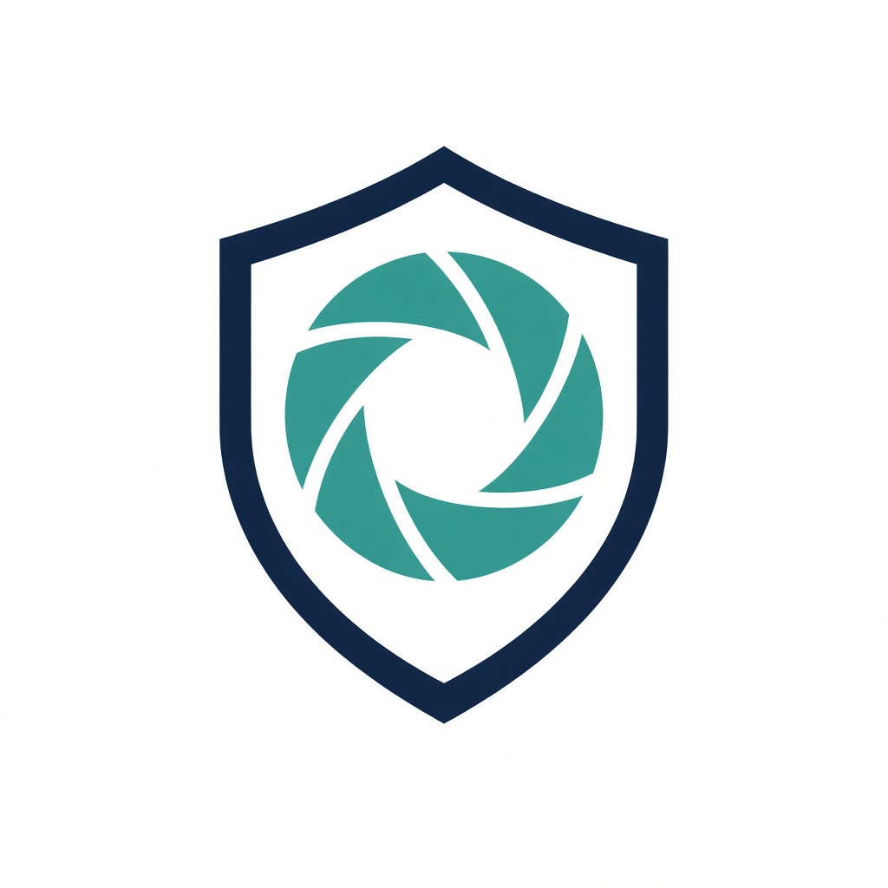

Kaynak: DEMO-SUNUM-NOTLARI.md · canlı demo dahil
← → ile ilerle · F tam ekran
| Dk | Bölüm | Ne anlat / göster |
|---|---|---|
| 0:00–1:00 | Pitch + problem | Neden SecLens? |
| 1:00–3:00 | Mimari | Kurallar + LLM hibriti, fine-tune yok |
| 3:00–5:30 | Mod 1 canlı | Phishing SMS → skor |
| 5:30–8:00 | Mod 2 canlı | Mini-SAST (SQLi / IDOR) |
| 8:00–10:30 | Mod 3 canlı | Screenshot + moondream |
| 10:30–12:00 | Mod 4 | E-posta sızıntı (XposedOrNot) |
| 12:00–14:00 | Hatalar & çözümler | “Ne zorladı?” |
| 14:00–15:00 | Challenge + kapanış | MIT, open-weight, sınırlar |
SecLens, Türkçe oltalama (SMS/e-posta), güvensiz kod snippet’leri, sahte login screenshot’ları ve e-posta sızıntı kontrolünü tek yerde toplayan open-weight AI güvenlik asistanıdır.
Eğitim ve farkındalık aracıdır; antivirüs veya adli bilişim yerine geçmez.
Stack: Streamlit + Ollama · Llama 3.2 1B (metin) · moondream (görüntü) · kendi kural motorları.
Hackathon’da (~6 saat) jüriye çalışan demo + açık lisans + open-weight AI’nın gerçekten iş yaptığı bir şey; TR scam’e özel, kopya konu değil.
Kullanıcı (Streamlit / app.py)
│
├─ Mod 1 Metin ──► phishing.py + scam_patterns.py
│ ├─ KURAL skoru (0–100) ← güvence
│ └─ Ollama llama3.2:1b ← Türkçe gerekçe
├─ Mod 2 Kod ────► code_scan.py + code_rules.py (~185)
│ └─ Ollama → açıkla / düzeltme öner
├─ Mod 3 Görüntü ► screenshot_scan.py
│ ├─ Checklist + URL (skor ağırlığı)
│ └─ moondream (opsiyonel vision)
└─ Mod 4 Sızıntı ► breach_check.py → XposedOrNot API
| Seçenek | Neden |
|---|---|
| Sadece LLM | 1B TR scam’de yetersiz; güvenli maili “şüpheli” sayabilir; skor rastgele |
| Sadece kurallar | Açıklama zayıf; jüri “AI nerede?” der |
| Hibrit (bizim) | Skor kurallardan (tekrarlanabilir); LLM gerekçe + öneri |
Fine-tune yok. “Öğrenme” = kamu uyarılarından / OWASP-CWE’den kural seti çıkarmak.
| Dosya | Rol |
|---|---|
| app.py | 4 sekme UI, Ollama durum, örnekler |
| ui/theme.py | Marka / CSS |
| core/ollama_client.py | :11434 chat / vision |
| core/scam_patterns.py | TR smishing ~400+ kalıp |
| core/phishing.py | Mod 1 skor + LLM prompt |
| core/code_rules.py | ~185 OWASP/CWE kuralı |
| core/code_scan.py | Mini-SAST + LLM notu |
| core/screenshot_scan.py | Checklist + moondream |
| core/breach_check.py | XposedOrNot |
| examples/ · LICENSE · README | Demo + MIT + model bilgisi |
scam_patterns (banka, e-Devlet, IBAN, OTP+WhatsApp, uzlaştırma, valilik+IG…)“Skorun sahibi kurallar; LLM hikâyeyi anlatıyor. 1B model JSON’u bozsa bile risk bandı çökmez.”
“Bu Semgrep/CodeQL değil; eğitim amaçlı pattern SAST. Taint analizi yok. Hackathon’da gösterilebilir OWASP haritası için bilinçli trade-off.”
examples/code/external/ — bilinen zafiyetlerle kural setini doğrulamak (Trojan Source, XXE, pickle…).
examples/screenshots/altay/)Eğitim senaryosu; production phishing detector değil.
breach_check.py → XposedOrNot ücretsiz APINeden: Metin/kod/görüntü önleyici; sızıntı “sonradan farkındalık” — 4 ayaklı hikâye.
| # | Sorun | Çözüm |
|---|---|---|
| 1 | gh yok / login | brew gh + auth → Mundereous/seclens |
| 2 | Streamlit e-posta prompt | credentials.toml + headless |
| 3 | Ollama PATH / :11434 | Ollama.app / serve + symlink |
| 4 | pull EOF | Tekrarlı ollama pull (resume) |
| 5 | Cloud hesap | Local only |
| 6–7 | git push / şirket author | gh auth setup-git; history → Mundereous |
| # | Sorun | Çözüm |
|---|---|---|
| 8 | Güvenli mail → yüksek risk | Kural motoru + güvenli kelimeler |
| 9 | Uzlaştırma düşük skor | TR scam kalıpları + telefon + “arayın” |
| 10 | Valilik+IBAN kaçtı | Bitişik IBAN regex + maskeleme |
| 11 | JSON bozuldu | Kısa prompt + onarım; skor kurallarda |
| 12 | “Takıldı” hissi | 15–60 sn uyarısı; LLM her analizde |
Küçük open-weight + iyi kural seti > büyük API model (hackathon). Agresif CSS Streamlit widget’ı kırar.
Antivirus değil · production SAST değil · vision OCR mucizesi değil · şüpheli SMS: 5010
“SecLens, Türkçe güvenlik farkındalığını open-weight AI ile birleştiriyor: skorlar kurallarla güvenilir, açıklamalar yerel modelle anlaşılır, her şey MIT ve public repo’da.”
# Uygulama cd ~/Desktop/HACKTOBERFEST streamlit run app.py # → http://127.0.0.1:8501 # Ollama open -a Ollama ollama pull llama3.2:1b ollama pull moondream
| Belirti | Ne yap |
|---|---|
| Ollama kapalı | Ollama.app aç |
| UI eski / hata | Restart + Cmd+Shift+R |
| Model yok | ollama pull … |
| Analiz yavaş | Normal (1B); spinner bekle |
| Soru | Cevap |
|---|---|
| AI nerede? | Metin/kod: 1B gerekçe; görüntü: moondream; skor çoğunlukla kurallarda |
| Fine-tune? | Hayır — pattern + prompt |
| Neden 1B? | Hackathon + local + small LM; kurallarla stabil |
| Farkı? | TR smishing; 4 mod; yerel OW (Mod 4 API hariç) |
| Yanlış alarm? | Erken vardı; kural seti büyüdü; %100 değil |
| Lisans? | Kod MIT; Llama 3.2 Community; ağırlıklar repo’da yok |
Toplam ~15 dk. Konuşma metni: DEMO-SUNUM-NOTLARI.md